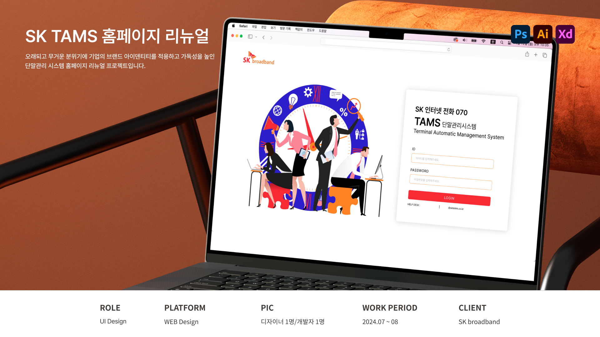

SK TAMS 홈페이지 리뉴얼

프로젝트 개요
프로젝트 목표
기존 서비스의 화면 구조와 콘텐츠를 기반으로 관리자 환경에 적합한 UI로 개선하고, 개발자와 협업하여 실제 웹 화면으로 구현을 목표로 한다.
디자인 목표
무거운 시각 요소를 정리해 가볍고 깔끔한 인터페이스로 개선하고, 다양한 화면 환경에 대응할 수 있는 레이아웃을 제공한다.
프로젝트 타입
변화한 환경에 맞춰 기업의 정체성을 높이고 신뢰를 높이기 위한 홈페이지 리뉴얼
프로젝트 유형
B2B Website Redesign
담당업무
담당 범위
UI 디자인 · 개발자 협업
홈페이지 리뉴얼 디자인
기존 홈페이지의 화면 분석을 통해 딱딱하고 무거웠던 인상을 개선하고 브랜드 아이덴티티에 맞춘 색상과 게시판의 가독성을 높여 정보구조를 쉽게 파악할 수 있도록 레이아웃을 설계하여 시각적으로 정돈된 화면을 제공하기 위한 UI화면 설계
*본 프로젝트는 NDA(비밀유지 계약) 및 기업 보안 정책을 준수하기 위해 비식별화 되었습니다.
저작권 및 지식재산권은 계약상 권리 귀속 주체에게 있으며, 본 자료는 기업 제출 및 채용 검토 목적으로만 제공됩니다.
AI학습·무단 전재·복제 및 외부 배포를 금합니다.
AI학습·무단 전재·복제 및 외부 배포를 금합니다.


© 2026 Leesujin. All rights reserved.